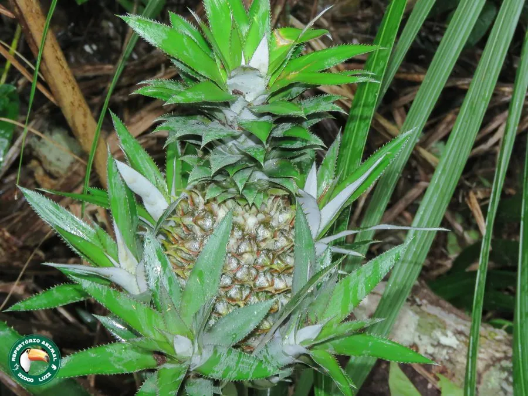

农作物与经济植物 · 植物界
菠萝 Ananas comosus

菠萝是凤梨科多年生草本，果实由许多小花聚合而成，酸甜多汁、香气浓郁，可鲜食或加工罐头、果汁，是热带名果。
- 分类
- 门被子植物门纲单子叶植物纲目禾本目科凤梨科属凤梨属
- 栖息环境
- 热带丘陵与平原，喜高温、光照和酸性土壤
- 地理分布
- 原产南美洲，现栽培于东南亚、中国华南与夏威夷等地
- 保护级别
- 暂无评估（栽培作物）
物种志
菠萝是凤梨科多年生草本，株高 0.5–1 m，叶片剑形，簇生，边缘有锯齿，叶面深绿，叶背灰绿。叶簇中央抽生花序，花序由许多小花组成，聚合成肉质的聚花果，果实顶端长有冠芽。果皮由许多六角形小果眼组成，成熟时黄绿或橙黄，果肉黄色，酸甜多汁。
菠萝原产南美洲巴西、巴拉圭一带，印第安人早已栽培，15 世纪后随航海传播到热带各地。它喜高温、光照充足，耐旱但不耐寒，适宜在排水良好的酸性沙壤土生长。果实成熟期因产区而异。鲜食前常用盐水浸泡，以抑制菠萝蛋白酶；果肉可制罐头、果汁、果干，叶纤维可织布。中国广东、海南、台湾等地是主产区，果实糖度在完熟前达到高峰，需适时采收。
形态与习性
- 株高0.5–1 m，多年生草本
- 叶剑形，簇生，边缘有锯齿
- 果实聚花果，顶端有冠芽
- 果肉黄色，酸甜多汁
- 用途鲜食、罐头与果汁
- 主要产区广东、海南、台湾等地
趣味知识
- 菠萝果实由许多小花聚合而成，表面的小果眼就是证据。
- 鲜菠萝用盐水浸泡可减轻扎嘴感，原因是抑制菠萝蛋白酶。
- 菠萝顶端叶状的冠芽可用于繁殖新植株。